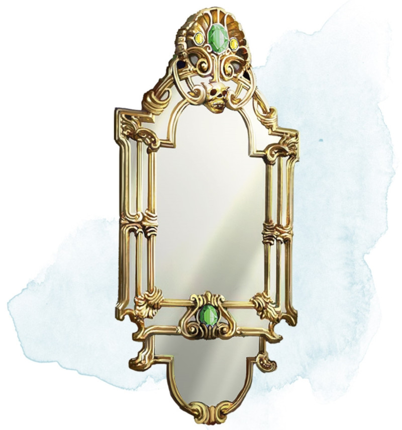

Miroir d'emprisonnement
Objet merveilleux, très rare
Quand ce miroir de 1,20 mètre de haut est regardé indirectement, sa surface montre de pâles images de créatures. Le miroir pèse 25 kg et a une CA de 11, 10 points de vie et la vulnérabilité aux dégâts contondants. Il se brise en éclats et est détruit s'il tombe à 0 point de vie.
Si le miroir est accroché à une surface verticale et que vous êtes à 1,50 mètre ou moins de lui, vous pouvez utiliser une action pour prononcer son mot de commande et l'activer. Il reste actif tant que vous n'utilisez pas une autre action pour le désactiver de la même façon.
Toute créature autre que vous qui voit son reflet dans le miroir alors qu'il est actif et se situe à 6 mètres ou moins du miroir doit réussir un jet de sauvegarde de Charisme DD 15 ou être emprisonnée avec tout ce qu'elle porte dans une des douze cellules extradimensionnelles du miroir. Ce jet de sauvegarde se fait avec un avantage si la créature connaît la vraie nature du miroir. Les artificiels réussissent automatiquement le jet de sauvegarde.
Une cellule extradimensionnelle est un espace infini rempli d'un épais brouillard réduisant la visibilité à 3 mètres. Les créatures emprisonnées dans le miroir ne vieillissent pas et n'ont pas besoin de boire, de manger ou de dormir. Il est possible de s'échapper de l'intérieur de ces cellules avec l'aide d'une magie permettant le voyage interplanaire, sinon toute créature y est coincée jusqu'à ce qu'on l'en libère.
Si le miroir piège quelqu'un alors que les douze cellules sont déjà occupées, il libère aléatoirement un des prisonniers pour faire de la place au nouvel arrivant. Une créature libérée apparaît dos à la glace dans l'espace inoccupé le plus proche du miroir. Toutes les créatures sont libérées si le miroir est brisé.
Tant que vous êtes à 1,50 mètre ou moins du miroir, vous pouvez utiliser une action pour prononcer le nom d'une créature emprisonnée ou le numéro d'une des cellules. La créature appelée ou la cellule choisie apparaît alors sous forme d'image à la surface du miroir. Vous pouvez alors communiquer normalement avec la créature. De la même façon vous pouvez utiliser une action pour prononcer un second mot de commande et libérer la créature piégée. Elle apparaît alors dos au miroir dans l'espace inoccupé le plus proche, avec toutes ses possessions.
Si le miroir est accroché à une surface verticale et que vous êtes à 1,50 mètre ou moins de lui, vous pouvez utiliser une action pour prononcer son mot de commande et l'activer. Il reste actif tant que vous n'utilisez pas une autre action pour le désactiver de la même façon.
Toute créature autre que vous qui voit son reflet dans le miroir alors qu'il est actif et se situe à 6 mètres ou moins du miroir doit réussir un jet de sauvegarde de Charisme DD 15 ou être emprisonnée avec tout ce qu'elle porte dans une des douze cellules extradimensionnelles du miroir. Ce jet de sauvegarde se fait avec un avantage si la créature connaît la vraie nature du miroir. Les artificiels réussissent automatiquement le jet de sauvegarde.
Une cellule extradimensionnelle est un espace infini rempli d'un épais brouillard réduisant la visibilité à 3 mètres. Les créatures emprisonnées dans le miroir ne vieillissent pas et n'ont pas besoin de boire, de manger ou de dormir. Il est possible de s'échapper de l'intérieur de ces cellules avec l'aide d'une magie permettant le voyage interplanaire, sinon toute créature y est coincée jusqu'à ce qu'on l'en libère.
Si le miroir piège quelqu'un alors que les douze cellules sont déjà occupées, il libère aléatoirement un des prisonniers pour faire de la place au nouvel arrivant. Une créature libérée apparaît dos à la glace dans l'espace inoccupé le plus proche du miroir. Toutes les créatures sont libérées si le miroir est brisé.
Tant que vous êtes à 1,50 mètre ou moins du miroir, vous pouvez utiliser une action pour prononcer le nom d'une créature emprisonnée ou le numéro d'une des cellules. La créature appelée ou la cellule choisie apparaît alors sous forme d'image à la surface du miroir. Vous pouvez alors communiquer normalement avec la créature. De la même façon vous pouvez utiliser une action pour prononcer un second mot de commande et libérer la créature piégée. Elle apparaît alors dos au miroir dans l'espace inoccupé le plus proche, avec toutes ses possessions.
Dungeon Master´s Guide (SRD)
